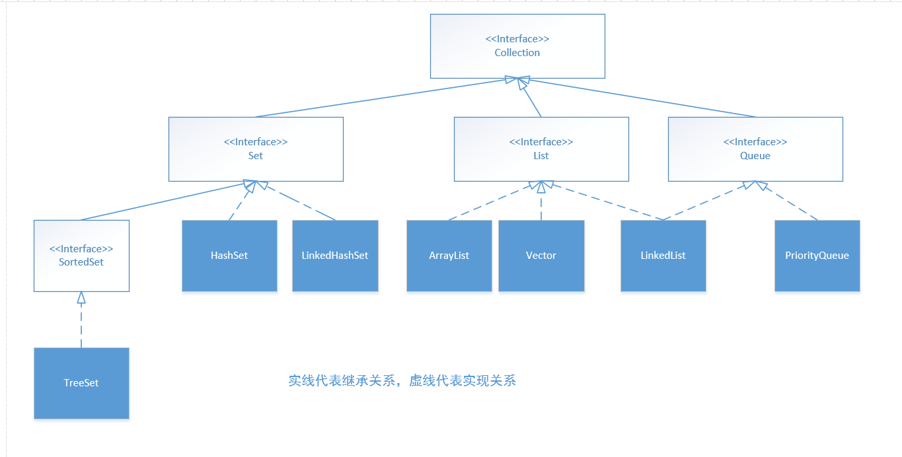
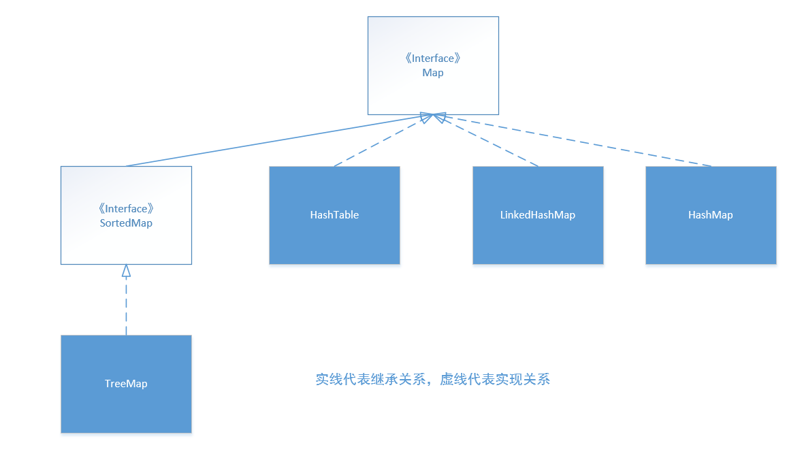
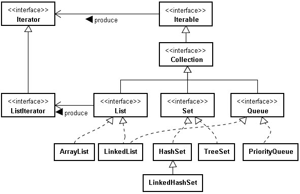
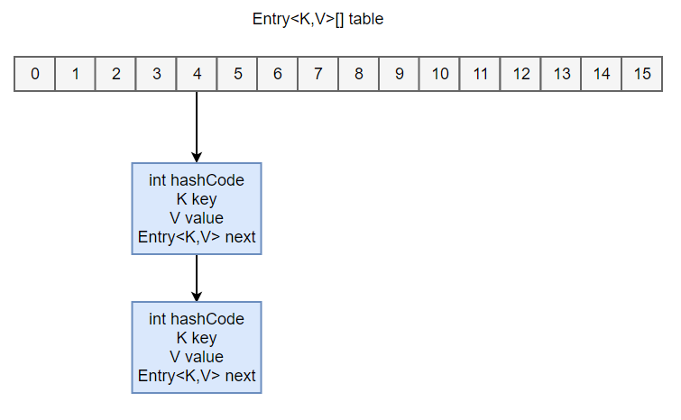
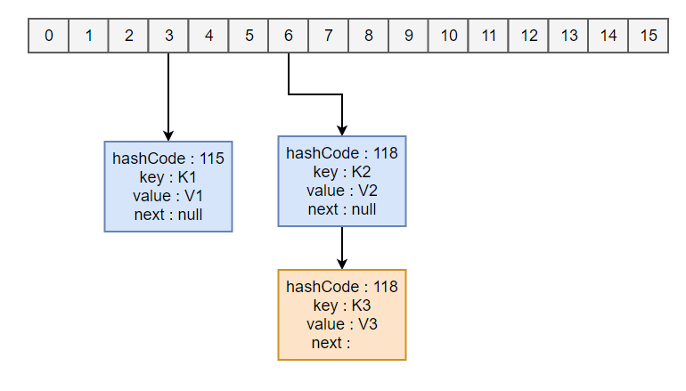
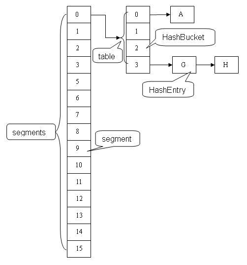

Java容器
[TOC]
容器主要包括 Collection 和 Map 两种。
Collection：存放独立元素的序列。
Map：存放key-value型的元素对。
Collection
Collection 接口包含 List、Set 以及 Queue 子接口。

Collection 和 Collections 有什么区别？
Collection 是一个接口，它是 Set、List 等容器的父接口；Collections是个一个工具类，提供了一系列的静态方法来辅助容器操作，这些方法包括对容器的搜索、排序、线程安全化等等。
Set
存储的元素是无序的，不可重复的。
HashSet：基于哈希实现，支持快速查找，但它不保证元素的迭代顺序。
TreeSet：基于红黑树实现，支持有序性操作，但是查找效率不如 HashSet，HashSet 查找时间复杂度为 O(1)，TreeSet 则为 O(logN)；
LinkedHashSet：具有 HashSet 的查找效率，且内部使用链表维护元素的插入顺序。
List
存储的元素是有序的，可重复的。
ArrayList：基于动态数组实现，随机访问的效率较高；
Vector：和 ArrayList 类似，每次扩容为 $2$ 倍空间，性能不如 ArrayList，但它用了 Synchronized 来实现线程同步。
LinkedList：基于双向循环链表实现，只能顺序访问，但是可以快速地在链表中间插入和删除元素。此外，LinkedList 还可以用作栈、队列和双端队列。
Queue
LinkedList：可以用它来支持双向队列；
PriorityQueue：基于堆结构实现，可以用它来实现优先级队列。
Map

HashMap：基于哈希实现；
HashTable：和 HashMap 类似，但它是线程安全的，现在已被淘汰。现在可以使用 ConcurrentHashMap 来支持线程安全，并且 ConcurrentHashMap 的效率会更高，因为 ConcurrentHashMap 引入了分段锁。
LinkedHashMap：使用链表来维护元素的顺序，顺序为插入顺序或者最近最少使用（LRU）顺序。
TreeMap：基于红黑树实现。
设计模式
迭代器模式

Collection 实现了 Iterable 接口，其中的 iterator() 方法能够产生一个 Iterator 对象，通过这个对象就可以迭代遍历 Collection 中的元素。
1 | public interface Iterator<E> { |
迭代器是将这样的方法抽取出接口，然后在每个类的内部，定义自己迭代方式，提供一种方法访问一个容器对象中各个元素，而又不需要暴露该对象的内部细节。
Iterator 主要是用来遍历集合用的，它的特点是更加安全，因为它可以确保，在当前遍历的集合元素被更改的时候，就会抛出 ConcurrentModificationException 异常。
从 JDK 1.5 之后可以使用 foreach 方法来遍历实现了 Iterable 接口的聚合对象。
1 | List<String> list = new ArrayList<>(); |
Iterator 的用法：
- 使用方法 iterator() 要求容器返回一个 Iterator。第一次调用 Iterator 的 next() 方法时返回序列的第一个元素。
- 使用 next() 获得序列中的下一个元素。
- 使用 hasNext() 检查序列中是否还有元素。
- 使用 remove() 将迭代器新返回的元素删除。
适配器模式
使用 Arrays.asList() 方法可以很方便地将数据转换为集合，但是转换后的集合不能使用修改的相关操作（add，remove，clear）等。
Arrays.asList() 是泛型方法，传入的对象必须是对象数组。因此不能使用基本类型数组作为参数，只能使用相应的包装类型数组。
1 | Integer[] arr = {1, 2, 3}; |
源码：
1 |
|
Arrays.asList() 将数组转换为集合后，底层其实还是数组。因此如果更改子列表的值，原数组也会发生变化。当传入一个原生数据类型数组时，Arrays.asList() 的真正得到的参数就不是数组中的元素，而是数组对象本身，此时 List 的唯一元素就是这个数组。将 int 改成 Integer 就可以正常遍历。
1 | int[] myArray = { 1, 2, 3 }; |
ArrayList 扩容机制
1 | public class ArrayList<E> extends AbstractList<E> |
实现了 RandomAccess 接口，因此支持随机访问。
基于数组实现，ArrayList 具有动态扩容特性。
数组的默认大小为 $10$。
1 | private static final int DEFAULT_CAPACITY = 10; |
删除元素时需要调用 System.arraycopy() 对元素进行复制，因此删除操作成本很高。
1 | public E remove(int index) { |
添加元素时使用 ensureCapacity() 方法来保证容量足够，如果不够时，需要使用 grow() 方法进行扩容，使得新容量为旧容量的 $1.5$ 倍（oldCapacity + (oldCapacity >> 1))。扩容操作需要把原数组整个复制到新数组中，因此最好在创建 ArrayList 对象时就指定大概的容量大小，减少扩容操作的次数。
1 | private void ensureExplicitCapacity(int minCapacity) { |
modCount 用来记录 ArrayList 结构发生变化的次数。结构发生变化是指添加或者删除至少一个元素的所有操作，或者是调整内部数组的大小，仅仅只是设置元素的值不算结构发生变化。
在进行序列化(把对象转化为可传输的字节序列过程)或者迭代等操作时，需要比较操作前后 modCount 是否改变，如果改变则需要抛出 ConcurrentModificationException。
1 | private void writeObject(java.io.ObjectOutputStream s) |
HashMap 原理
存储结构
使用拉链法来解决冲突，内部包含了一个 Entry 类型的数组 table，数组中的每个位置被当成一个桶。
1 | transient Entry[] table; |
其中，Entry 就是存储数据的键值对，它包含了四个字段。从 next 字段我们可以看出 Entry 是一个链表，即每个桶会存放一个链表。

JDK 1.8 使用 Node 类型存储一个键值对，它继承自 Entry。
1 | static class Node<K,V> implements Map.Entry<K,V> { |
拉链法原理
举个例子
1 | HashMap<String, String> map = new HashMap<>(); |
- 新建一个 HashMap，默认大小为 16；
- 插入 <K1,V1> 键值对，计算 K1 的 hashCode 为 $115$，使用除留余数法得到所在的桶下标 $115\%16=3$。
- 插入 <K2,V2> 键值对，计算 K2 的 hashCode 为 $118$，使用除留余数法得到所在的桶下标 $118\%16=6$。
- 插入 <K3,V3> 键值对，计算 K3 的 hashCode 为 $118$，使用除留余数法得到所在的桶下标 $118\%16=6$，插在 <K2,V2> 后面。

查找需要分成两步进行：
计算键值对所在的桶；
在链表上顺序查找。
时间复杂度显然和链表的长度成正比。
从 JDK 1.8 开始，一个桶存储的链表长度大于 $8$ 时会将链表转换为红黑树。
计算桶下标
$(1)$ hashCode 通过调用 Key 的 hashCode() 方法得到。
1 | public final int hashCode() { |
$(2)$ 高位运算
将 hashCode 的高 $16$ 位和低 $16$ 位进行异或操作，使得数组比较小时也能保证高低位都参与到哈希计算中。
1 | static final int hash(Object key) { |
$(3)$ 除留余数法
令 $x = 1<<4$，即 $x$ 为 $2$ 的 $4$ 次方，它具有以下性质：
1 | x : 00010000 |
令一个数 $y$ 与 $x-1$ 做与运算，可以去除 $y$ 位级表示的第 $4$ 位及以上数：
1 | y : 10110010 |
结果和 $y$ 对 $x$ 取模是一样的：
1 | x : 00010000 |
位运算的代价比求模运算小的多，因此在进行这种计算时能用位运算的话能带来更高的性能。
拉链法需要使用除留余数法来得到桶下标，需要进行以下计算：hash%capacity，如果能保证 capacity 为 $2$ 的幂次方，那么就可以将这个操作转换为位运算。
扩容机制
设 HashMap 的 table 长度为 $M$，需要存储的键值对数量为 $N$，如果哈希函数满足均匀性的要求，那么每条链表的长度大约为 $N/M$，因此平均查找次数的数量级为 $O(N/M)$。为了让查找的成本降低，应该尽可能使得 N/M 尽可能小，因此需要保证 M 尽可能大，也就是说 table 要尽可能大。HashMap 采用动态扩容来根据当前的 N 值来调整 M 值，使得空间效率和时间效率都能得到保证。
相关参数如下：
| 参数 | 含义 |
|---|---|
| capacity | table 的容量大小，默认为 16，需要注意的是 capacity 必须保证为 2 的次方。 |
| size | table 的实际使用量。 |
| threshold | size 的临界值，size 必须小于 threshold，如果大于等于，就必须进行扩容操作。 |
| load_factor | table 能够使用的比例，threshold = capacity * load_factor。 |
1 | static final int DEFAULT_INITIAL_CAPACITY = 16; |
当需要扩容时，令 capacity 为原来的 $2$ 倍。
1 | void addEntry(int hash, K key, V value, int bucketIndex) { |
扩容使用 resize() 实现，但它需要把旧 table 的所有键值对插入新的 table 中，因此这一步是很费时的。
1 | void resize(int newCapacity) { |
HashMap 允许有一个 Node 的 Key 为 null，该 Node 一定会放在第 $0$ 个桶的位置，因为这个 Key 无法计算 hashCode()，所以只能规定一个桶让它存放。
ConcurrentHashMap
==JDK 1.7 版本==
数据结构：ReentrantLock+Segment+HashEntry
ConcurrentHashMap(并发哈希表) 和 HashMap 实现上类似，最主要的差别是 ConcurrentHashMap 采用了分段锁，每个分段锁维护着几个桶，多个线程可以同时访问不同分段锁上的桶。在 HashTable 和由同步包装器包装的 HashMap 中，使用一个全局的锁来同步不同线程间的并发访问，在同一时间点只能有一个线程能访问容器。
存储结构：
1 | static final class HashEntry<K,V> { |
继承自 ReentrantLock(可重入锁)，每个 Segment 维护着多个 HashEntry。
1 | static final class Segment<K,V> extends ReentrantLock implements Serializable { |
默认的并发级别为 $16$，也就是说默认创建 $16$ 个 Segment。
查询：二次哈希，第一次定位到 Segment，第二次定位到元素所在链表的头部。

==JDK 1.8 版本==
数据结构：synchronized+CAS+Node+红黑树。
查找、替换、赋值操作都使用 CAS。
使用了内置锁 synchronized 代替 Segment，Segment 属于重入锁 ReentrantLock。主要是出于以下考虑：
- synchronized 的锁粒度更低，JDK1.7版本锁的粒度是基于 Segment 的，包含多个 HashEntry，而 JDK1.8 锁的粒度就是 HashEntry (首节点)；
- 基于 JVM 的 synchronized 优化空间更大，使用内嵌的关键字比使用 API 更加自然；
- 在大量的数据操作下，基于 API 的 ReentrantLock 会开销更多的内存。
Collections 工具类
排序，查找，替换操作
1 | void reverse(List list)//反转 |
同步控制
Collections 提供了多个 synchronizedXxx()方法·，该方法可以将指定集合包装成线程同步的集合，从而解决多线程并发访问集合时的线程安全问题。HashSet，TreeSet，ArrayList，LinkedList，HashMap，TreeMap 都是线程不安全的。Collections 提供了多个静态方法可以把他们包装成线程同步的集合。
方法如下：
1 | synchronizedCollection(Collection<T> c) //返回指定collection支持的同步(线程安全的)collection。 |
最好不要用这些方法，效率非常低，需要线程安全的集合类型时考虑使用 JUC 包下的并发集合。
fail-fast & fail-safe
$(1)$ 快速失败(fail-fast)
快速失败(fail-fast) 是 Java 集合的一种错误检测机制。在使用迭代器对集合进行遍历的时候，我们在多线程下操作非安全失败(fail-safe)的集合类可能就会触发 fail-fast 机制，导致抛出 ConcurrentModificationException 异常。 另外，在单线程下，如果在遍历过程中对集合对象的内容进行了修改的话也会触发 fail-fast 机制。
每当迭代器使用 hashNext()/next()遍历下一个元素之前，都会检测 modCount 变量是否为 expectedModCount 值，是的话就返回遍历；否则抛出异常，终止遍历。如果我们在集合被遍历期间对其进行修改的话，就会改变 modCount 的值，进而导致 modCount != expectedModCount ，进而抛出 ConcurrentModificationException 异常。
注：通过 Iterator 的方法修改集合的话会修改到 expectedModCount 的值，所以不会抛出异常。
$(2)$ 安全失败(fail-safe)
采用安全失败机制的集合容器，在遍历时不是直接在集合内容上访问的，而是先复制原有集合内容，在拷贝的集合上进行遍历。所以，在遍历过程中对原集合所作的修改并不能被迭代器检测到，故不会抛 ConcurrentModificationException 异常。
问题
Array 和 ArrayList 的区别？
- Array 可以存储基本数据类型和对象，ArrayList 只能存储对象。
- Array 指定固定大小，而 ArrayList 大小是自动扩展的。
ArrayList 和 LinkedList 的区别？
ArrayList：底层是基于数组实现的。查找快，增删较慢；
LinkedList：底层是基于链表实现的。查找慢、增删快。
ArrayList 的增删未必比 LinkedList 慢：
- 如果增删都是在末尾来操作（每次调用的都是 remove() 和 add()），此时 ArrayList 就不需要移动和复制数组。如果数据量有百万级，速度会比 LinkedList 要快。
- 如果删除操作的位置是在中间。由于 LinkedList 的消耗主要是在遍历上，ArrayList 的消耗主要是在移动和复制上（底层调用的是 arrayCopy() 方法，是 native 方法）。LinkedList 的遍历速度是慢于 ArrayList 的复制移动速度的。如果数据量有百万级，还是 ArrayList 要快。
ArrayList 实现 RandomAccess 接口有何作用？
RandomAccess 接口只是一个标志接口，只要 List 集合实现这个接口，就能支持快速随机访问。
实现 RandomAccess 接口的 List 集合采用一般的 for 循环遍历，而未实现这接口则采用迭代器，即 ArrayList 一般采用 for 循环遍历，而 LinkedList 一般采用迭代器遍历。
ArrayList 用 for 循环遍历比 iterator 迭代器遍历快，LinkedList 用 iterator 迭代器遍历比 for 循环遍历快。
HashMap 的 get 方法能否判断某个元素是否在 map 中？
HashMap 的 get 函数的返回值不能判断一个 key 是否包含在 map 中，因为 get 返回 null 有可能不包含该 key，也有可能该 key 对应的 value 为 null。因为 HashMap 中允许 key 为 null，也允许 value 为 null。
HashMap 与 HashTable 的区别
- HashTable 不允许 key 和 value 为 null；
- HashTable 是线程安全的。但是 HashTable 线程安全的策略实现代价太大，get/put 所有相关操作都是 synchronized 的，这相当于给整个哈希表加了一把大锁，多线程访问时候，只要有一个线程访问或操作该对象，那其他线程只能阻塞，相当于将所有的操作串行化，在竞争激烈的并发场景中性能就会非常差。
- HashMap 不是线程安全的，但可以通过 Collections.synchronizedMap(hashMap)，使其实现同步。
HashTable 和 ConcurrentHashMap 的区别
HashTable 和 ConcurrentHashMap 相比，效率低。 Hashtable 之所以效率低主要是使用了 synchronized 关键字对 put 等操作进行加锁，而 synchronized 关键字加锁是对整张 Hash 表的，即每次锁住整张表让线程独占，致使效率低下，而 ConcurrentHashMap 在对象中保存了一个 Segment 数组，即将整个 Hash 表划分为多个分段；而每个 Segment 元素，即每个分段则类似于一个Hashtable；这样在执行 put 操作时首先根据 hash 算法定位到元素属于哪个 Segment，然后对该 Segment 加锁即可。
HashSet 的实现原理
HashSet 的实现依赖 HashMap，HashSet 的值都是存储在 HashMap 中的。在 HashSet 的构造法中会初始化一个 HashMap 对象，HashSet 不允许值重复。因此，HashSet 的值是作为 HashMap 的 key 存储在 HashMap 中的，value 则是 PRESENT 变量，这个变量只作为放入 map 时的一个占位符而存在，当存储的值已经存在时返回 false。